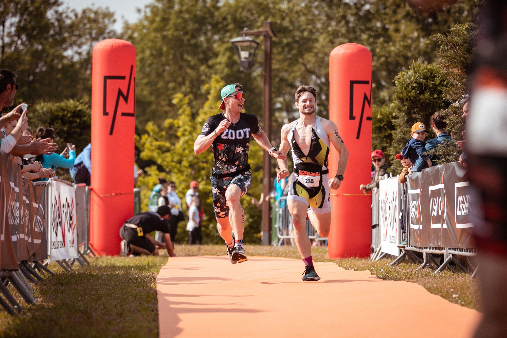
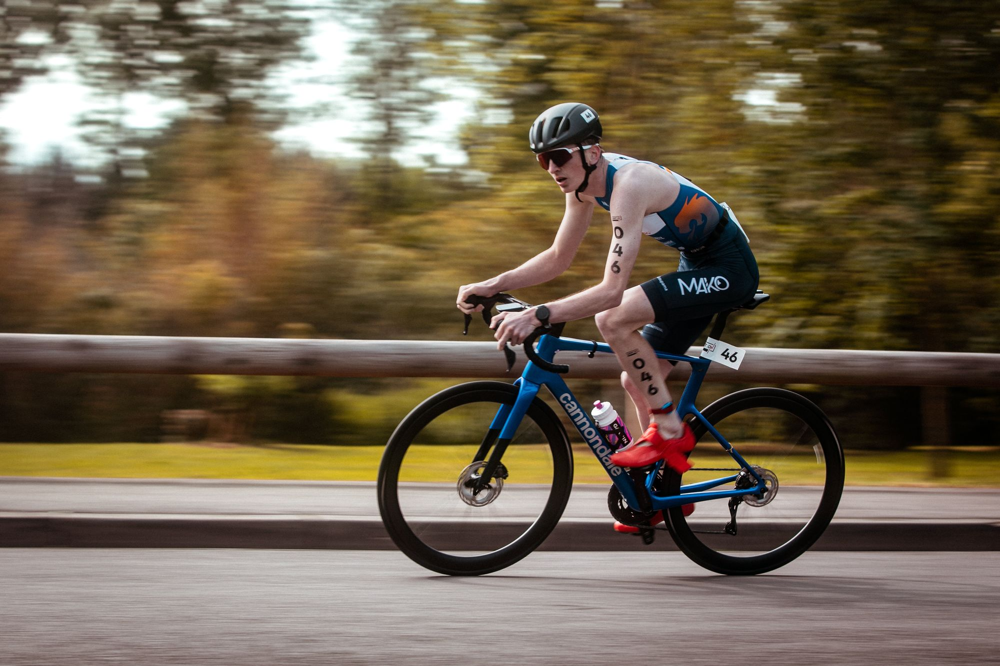
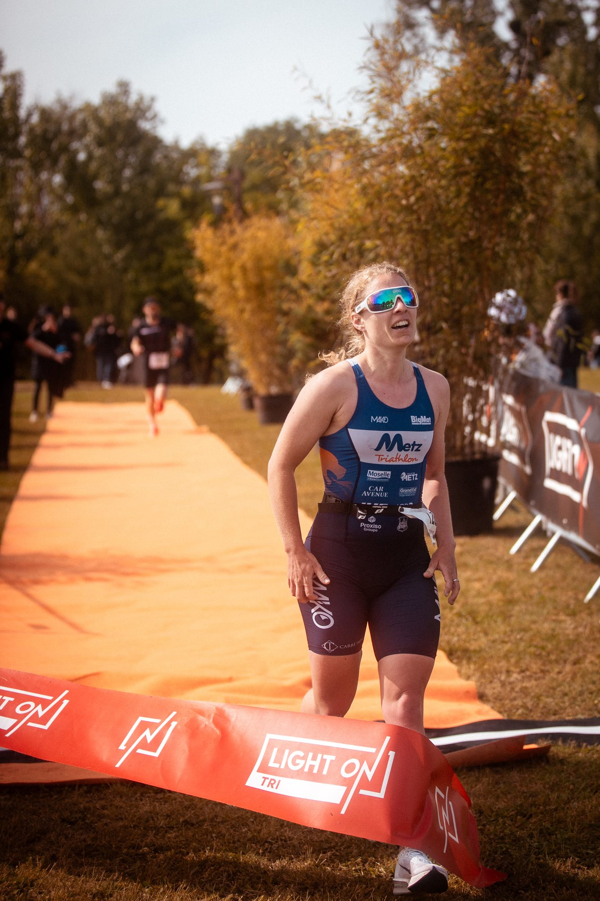
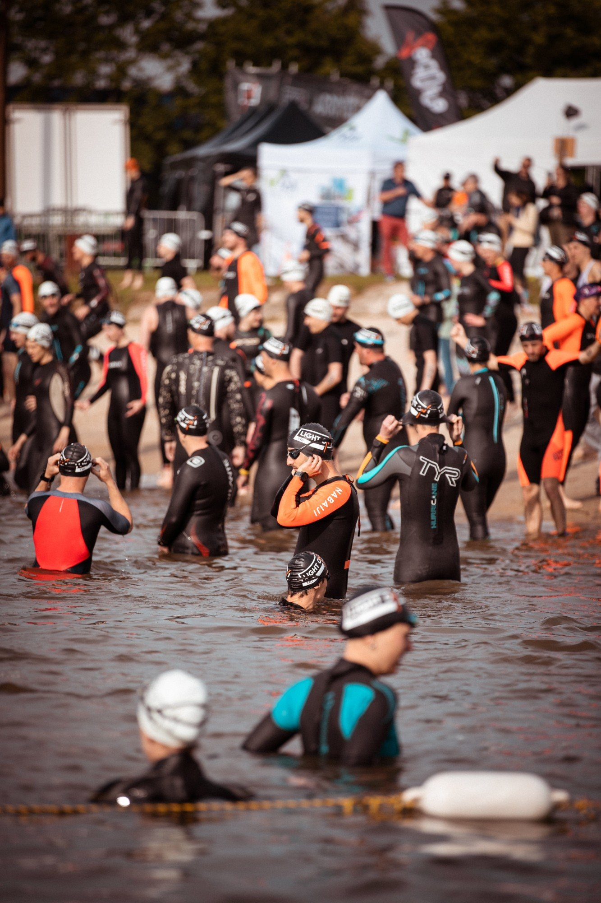

LIGHT ON TRI Woippy** · L'événement Un dimanche à Woippy Plage.
Dossards le samedi soir, trois départs le dimanche, et tout se passe au même endroit : le parc à vélo, l'arrivée et le Village LIGHT ON sont à quelques mètres les uns des autres.
La journée, heure par heure.
Horaires 2027 annoncés par l'organisation. Ils peuvent encore être ajustés : la version définitive sera dans le guide participant, envoyé quelques jours avant la course.

Tout se passe au Village LIGHT ON.
Retrait des dossards, parc à vélo, arrivée et remise des récompenses : tout est au même endroit, supporters compris.
Retrait des dossards
Samedi 15 mai de 17h00 à 19h00, ou le dimanche matin selon votre course. Pièce d'identité obligatoire.
Un seul parc à vélo
S* et M** partagent le parc à vélo de Woippy Plage, à deux pas de la sortie de l'eau et de l'arrivée.
Les supporters
Avec les boucles en vélo et en course à pied, vos proches vous voient passer plusieurs fois sans bouger. Pensez à leur donner vos horaires de départ.
Remise des récompenses
Podium S* : 3 premiers hommes et 3 premières femmes. Sur le M** : primes de 100, 75 et 50 €, plus le podium vétérans.

La gentillesse des gens (bénévoles) ! Spéciale dédicace à MR Labdant parc à vélo qui accueille avec un grand sourire ! Tout était très bien bravo à vous !
Ce qu'ils en disent.
J'adore l'ambiance de vos courses, très familiale et bienveillante envers toutes les personnes qui débutent. Ne changez rien !
L'organisation et l'accueil sont vraiment pro. On sent qu'il y a un énorme travail réalisé derrière. L'animation faite par Julien est vraiment un plus.
3ème année pour ma part à Woippy. L'organisation s'améliore, ça se voit et se ressent. Bravo et merci !
Glissez pour lire la suite
Ce sont leurs mots, pas les nôtres. Résultats et photos 2026 : les classements et la galerie.
Lieu & accès.
Le Village LIGHT ON s'installe à Woippy Plage, à Woippy (57140), aux portes de Metz et à 45 minutes de Nancy. Natation dans le plan d'eau, vélo et course à pied au départ du même site.
Le site
Woippy Plage, à Woippy (57140). Départ natation dans l'eau, parc à vélo et arrivée sur place.
Venir
Aux portes de Metz, à 45 minutes de Nancy. Le plan d'accès détaillé sera dans le guide participant.
Se garer
Au parking du Lidl, à deux pas de Woippy Plage.
Dormir sur place
Nombreux hôtels et Airbnb à proximité, à Woippy et dans l'agglomération messine.
Ce qu'il faut avoir sur soi.
Un briefing écrit arrive par e-mail quelques jours avant la course. En attendant, l'essentiel du règlement 2027.
Natation
Bonnet fourni par l'organisation, obligatoire. Combinaison néoprène obligatoire si l'eau n'est pas au-dessus de 16°C, recommandée dans tous les cas.
Dossard & puce
Un seul dossard, ni réduit ni modifié, porté éventuellement sur une ceinture porte-dossard fixée en trois points. La puce se porte à la cheville gauche et se rend après l'arrivée (50 € si elle ne revient pas).
Vélo
Un autocollant fourni par l'organisation, à coller sur le casque et sur la tige de selle.
Ravitaillement
Uniquement ceux de l'organisation : aucun ravitaillement extérieur n'est autorisé.
Environnement
Rien ne reste sur le parcours. Le règlement prévoit une sanction immédiate, et le plan d'eau vous remercie.
Temps limites
S* : aucun temps limite. M** : fin du vélo à 3h00 après le départ.
Avant de prendre le départ
Catégories, inscriptions, remboursements, horaires, parcours et temps limites : tout est dans le règlement. Cinq minutes de lecture, et plus de surprise le jour J.

Vraiment très bien organisé, les accès à la partie natation également. Bénévoles très sympas encore une fois.
Tout le détail, quelques jours avant la course
Horaires définitifs, plans d'accès, parcours détaillés et consignes de course : le guide participant arrive par e-mail et sera publié ici quelques jours avant le départ.
Les questions fréquentes.
Où et quand retirer mon dossard ?
Le samedi 15 mai de 17h00 à 19h00 à Woippy Plage, ou le dimanche 16 mai : de 7h00 à 8h30 pour le S*, de 10h30 à 11h15 pour le RUN 6 KM, de 11h30 à 13h00 pour le M**. Pièce d'identité obligatoire.
Licence ou certificat médical ?
Licencié : votre licence de triathlon, à télécharger sur l'interface d'inscription. Non-licencié : un certificat médical de non contre-indication à la pratique du triathlon (ou du sport) en compétition, de moins d'un an, à déposer au plus tard 15 jours avant l'épreuve.
À partir de quel âge ?
S* : dès la catégorie Cadet (né en 2011 et avant). M** : dès la catégorie Junior (né en 2009 et avant). Pour le RUN 6 KM, les conditions d'âge sont précisées sur la page d'inscription.
Faut-il une combinaison néoprène ?
Elle est obligatoire si l'eau n'est pas au-dessus de 16°C, et recommandée dans tous les cas. Le bonnet fourni par l'organisation est toujours obligatoire.
Peut-on s'inscrire sur place ?
Non : les inscriptions se font uniquement en ligne, et les places sont limitées sur chaque format. Ouverture le mardi 13 octobre 2026 à 20h00.
Comment marchent les packs ?
Mettez 2 triathlons LIGHT ON TRI 2027 dans votre panier (S*, M** ou L***, sur un ou plusieurs lieux) : -15 % automatiquement, sans code promo. Avec 3 triathlons : -20 %. Les packs sont nominatifs : les courses doivent être au nom de la même personne (trois dossards pour trois membres de la famille ne font pas un pack). Kids et RUN non compris.
Je ne peux plus venir, que faire ?
Un transfert de dossard est possible jusqu'à 48h avant le premier retrait des dossards (3 €). Sur certificat médical, 50 % des frais d'inscription sont remboursés jusqu'à un mois avant l'épreuve. Le pack annulation (10 € sur le M**, non proposé sur le S*) rembourse l'intégralité jusqu'à trois mois avant, puis 50 % jusqu'à un mois avant.
Y a-t-il des primes ?
Oui, sur le M** : 100, 75 et 50 € aux 3 premiers hommes et aux 3 premières femmes, plus un podium vétérans. Pas de prime sur le S*.
Mes proches peuvent-ils venir ?
Bien sûr, et on compte sur eux pour faire du bruit. Le site est pensé pour que les supporters voient passer les athlètes plusieurs fois.
Une autre question ?
Écrivez-nous à hello@lightontri.com ou appelez le 03 74 47 56 52. On vous répond.
On ouvre la saison ensemble.
Dimanche 16 mai 2027 à Woippy Plage. Inscriptions dès le mardi 13 octobre 2026 à 20h00.